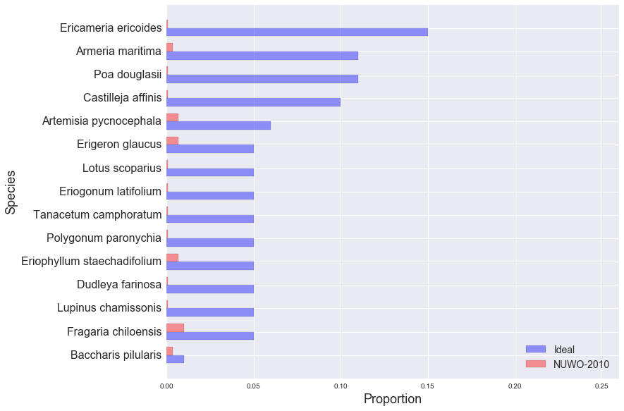

golden gate national parks conservancy: scrub mix
NUWO-2010
EAPO-2011
NMS-2010
NMS-2011
NMS-2012
NUWO-2010
NUWO-2011
NUWO-2012
SUDU-2008
SUDU-2009
SUDU-2010
SUDU-2011
SUDU-2012
Ideal and Observed Scrub Mix, NUWO-2010:
Other Species in NUWO-2010 Sample:
| Species | Observed % |
|---|---|
| Cupressus macrocarpa | 15.72% |
| Lolium sp. | 12.37% |
| Avena sp. | 10.03% |
| Bromus diandrus | 6.69% |
| Ehrharta erecta | 6.35% |
| Pinus radiata | 5.35% |
| Medicago polymorpha | 3.01% |
| Bare ground | 3.01% |
| Briza maxima | 3.01% |
| Annual grass litter | 3.01% |
| Lupinus arboreus | 2.68% |
| CUMA litter | 2.01% |
| LOSP litter | 2.01% |
| Hordeum marinum | 1.67% |
| Rubus ursinus | 1.34% |
| Vulpia sp. | 1.34% |
| Geranium molle | 1.34% |
| Hordeum sp. | 1.00% |
| Scrophularia californica | 1.00% |
| Fumaria parviflora | 1.00% |
| Viscia sativa | 0.67% |
| Taraxacum offianale | 0.67% |
| Aster chilensis | 0.67% |
| Gnaphalium luteo-album | 0.67% |
| Achillea millefolium | 0.67% |
| AVSP litter | 0.67% |
| Iris douglasii | 0.67% |
| BRDI litter | 0.67% |
| Elymus glaucus | 0.67% |
| Raphanus sativus | 0.33% |
| Stellaria media | 0.33% |
| PIRA litter | 0.33% |
| Brushpile | 0.33% |
| Marah fabaceous | 0.33% |
| Grindelia hirsutula var. hirsutula | 0.33% |
| Cypress litter | 0.33% |
| Rumex pulcher | 0.33% |
| Ribes sanguineum | 0.33% |
| Annual exotic grass | 0.33% |
| Oxalis incarnata | 0.33% |
| Vulpia myuros | 0.33% |
| Medicago indica | 0.33% |
| Gnaphalium stramineum | 0.33% |
| CUMA PIRA litter | 0.33% |
| Ceanothus thyrsiflorus | 0.33% |
| Conyza sp. | 0.33% |
| Silene gallica | 0.33% |
| Sonchus oleraceous | 0.33% |